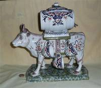

skip to content
skip to contentFaience
From reviews on www.ebay.com, I found that;
“Faience is generally defined as tin glazed earthenware. It is a mixture of local clays to which oxide of tin is added, so that it can become opaque and take on a white color. Hiding the impurities of the underlying clay body, it imitates the fineness of porcelain. A hand painted decoration is added to the clear surface. Faience became popular in Holland, Italy and France in the 17th century.
“The more commonly known European towns important in Faience production in the late 19th and 20th centuries include Blois, CA, Charolles, Desvres, Gien, Luneville, Moustiers, Nevers, Quimper, St Clement and others. Faience ranges from tableware, through jardinieres and fountains, to clocks.
“Faience potteries, or tin-enameled earthenware, date back to ancient times. The actual name "faience" comes from "Faenza", a town in Italy, and was introduced in France in the 16th Century by migrant Italian potters. Earlier on, faience had often been thought to be nothing more than peasant ware, and not appropriate in elegant French chateaus or palaces. However, in the mid 19th Century, France and its royalty fell into financial crises after numerous wars and other national economic disasters.
“The Industrial Revolution in the mid to late 19th Century brought new manufactured products and improved distribution of these goods. A newly emerged middle class sought items of aesthetic beauty for their lives and in their homes. Mass production allowed ordinary people to enjoy luxuries of life in a new era of economic independence.
“The faience pottery of the late 19th and early 20th Century revived a long history of the potters’ art, and embodied an artistic and social statement of the times. The earlier historic decors of Nevers, Rouen, Moustiers, Strasbourg, and Marseilles were captured and reproduced by factories at Quimper, Desvres, Boulogne-sur-Mer, Malicorne and others.”
While I have seen lots of faience at antique fairs, I have found very few cow creamers. The ones that I do have, however, are very lovely.
 |
These four lovely examples come from the studios of Faiencerie Artisanale Roullet-Renoleau, founded by Alfred Renoleau (1854-1930) in 1896. They are still in business, and you can see a variety of their current wares (no cows at the moment but they tell me they are in the process of designing one) and learn about their history and manufacturing process at their website, www.roullet-renoleau.fr There I learned that the founder “was born in Mansle in 1854, son of a hairdresser. It is when doing his "military service", in Paris that he discovers Bernard Palissy's work (Bernard Palissy was a French chemist, inventor, or rather initiator, in France of the enameled pottery, known since as earthenware…)… After trials starting in 1880 in Mansle, then effective productions in Roumazières”… Renoleau started the still operating pottery in Angouleme, in the Poitou-Charentes region of France. He had no children of his own, but adopted a nephew Joseph Roullet who took over the firm after Renoleau’s death, leading to the Pottery’s (and the current, 5th generation potter’s) name. |

All four of these cow creamers bear a con-joined “AR” as well as an A, and I have been assured by the current staff of the Fiaencerie that they were indeed made by the Founder, Alfred Renoleau, in the 1920s. |
|
Here again are my four Renoleau creamers. The large one (left picture) and the smaller of the two in the middle picture both bear a banner with “St Malo” on their neck. The other two have crests, one that I don’t recognize and the other (right picture, smallest cow) from Dieppe. Since St Malo and Dieppe were both noted tourists spots, I think it most likely that these cows date from the late 19c or early 20c, pre-WW I when folks still purchased lovely items like this as souvenirs of their vacations. |
|
 |
Well, the collection has now grown to include a 5th from the Renoleau studio, this time marked for ‘Dinan’ and bearing a maker’s mark that looks sort of like an open ‘4’. Presumably it was decorated by someone other than the ‘master’, or he just left his initials off. It’s just a bit smaller than the larger St Malo cow. Like St Malo, Dinan is a popular medieval town for tourists to visit in Brittany. It sits above the River Rance, and in addition to the port the medieval town on the hilltop features many fine 13c buildings and a 3km section of city walls. From Wikipedia I also learned that the ~1066 Bayeux Tapester has a section that shows “Here the knights of Duke William fight against the men of Dinan”. |
 |
Well.. this isn’t a creamer, but it is another cow from Alfred Renoleau and bears the same marks as its relatives. I believe it was designed to hold a liqueur or cordial of some sort – thus the spigot in the side and the little cups (two are missing). |
 |
Here is another lovely Renoleau decanter, this time pulled by a pair of bulls. The spigot is (or was – it has been replaced by a cork) in the back of the barrel, and cups apparently were separate because none came with this piece. |
|  | Here is a different version of a cow liqueur or cordial decanter. It bears the mark of a connected “VR” and the word “France”. Although it came to me without history, from an (almost) identical one offered on eBay (for $989…mine was $125 a few years ago) I believe it to be Rouen décor, late 19c, made in Desvres by the Fourmaintraux Freres factory, circa 1879-1887. The one on eBay has ‘Mont-Saint-Michel’ written on the bottom, so I presume that this magnificent beast, like the Renoleau ones, was made to be sold as a souvenir. |
This large cow decanter bearing a barrel is quite similar to the one above, although smaller (10”x9½” vs 12”x12”) and with just two hooks and cups on each side instead of three. It is marked on the bottom for “Le Trémont” which is in Normandy. It also bears the numbers “1804/1” and the signature of the artist. The cups are not the originals but are from the same region, and to my mind match quite nicely. It came to me from Germany. |
|
This creamer comes (via eBay) from an antique dealer in Lisse, the Netherlands, who indicated that it was "possibly Fourmaintreau Desvres, circa 1890” (and could provide no further information). A web article from ‘Arts and Antiques in Florida’, authored by John Beers, notes that “Desvres, situated in north central France, has been a pottery center since early times, having excavated pottery kilns from the Roman era. In the 1870’s the heyday of Desvres pottery began as the Formaintraux family of potters perfected their craft in the style and manor of old Rouen. Their retail operations provided cachepots, jardinières, plates, candlesticks, miniatures, and other decorative items. Desvres pottery is known for a creamy white background decorated with bright “Delft” blue, brilliant lemon yellow, iron red and sage green.” I’ve shown the base with its marks, and as always would appreciate help in attribution. |
|
 |
|
  These three lovely old creamers came to me from the UK. I haven’t been able to identify the mark, but by virtue of their style and decoration I believe that they are likely 19c faience. |
|
This delightfully colored version is marked “Rouen – fait main” providing a bit more information on their provenance. |
|
 |
I have included this modern creamer, of fairly standard shape, in the Faience theme because it is clearly marked “Desvres, France”, with a hand-written “Breiz” and a maker’s mark of a circle with rays with a script “GF” inside. It’s by no means as fancy as the older ones, but looks a lot like much of the fairly modern ‘Quimper faience’ I’ve seen at antique fairs. |


{kind=link}
{kind=link}
{kind=link}
{kind=link}